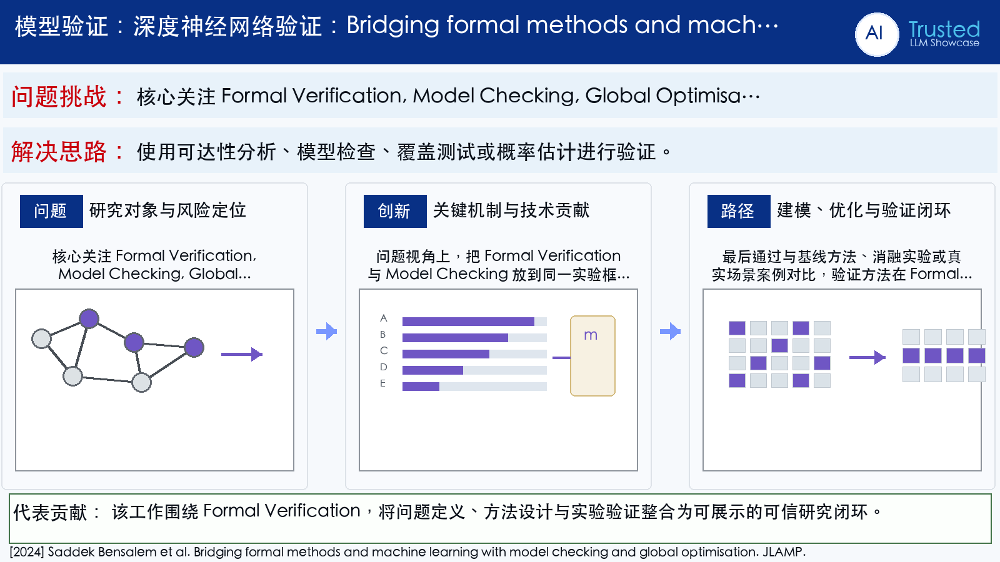

Problem
解决的问题
这篇论文属于“深度神经网络验证”方向，核心关注 Formal Verification, Model Checking, Global Optimisation, Machine Learning。它要解决的不是单纯提升一个指标，而是在 JLAMP 场景下，让模型、数据或感知系统面对真实扰动和任务约束时仍然可用、可评估、可解释。把经验测试推进到带边界或置信度的安全保证。
Verification on DNNs · 2024 · JLAMP
Bridging formal methods and machine learning with model checking and global optimisation
Problem
这篇论文属于“深度神经网络验证”方向，核心关注 Formal Verification, Model Checking, Global Optimisation, Machine Learning。它要解决的不是单纯提升一个指标，而是在 JLAMP 场景下，让模型、数据或感知系统面对真实扰动和任务约束时仍然可用、可评估、可解释。把经验测试推进到带边界或置信度的安全保证。
Value
用于展示时，这篇论文可以放在“问题定义 - 方法设计 - 证据评估”的链条中理解。它的价值在于把 Formal Verification 具体化为一个可实验验证的研究问题，并通过 Journal of Logical and Algebraic Methods in Programming（CCF C） 的发表形态呈现该方向的代表性进展。
ImageGen-style Representative Page
该代表页参考学术汇报信息图风格生成，用统一的深蓝标题栏、问题/思路提示带和三段式方法卡片，总结论文的主要研究问题、创新点与解决思路。
打开原文 PDF
Technical Route
Innovation